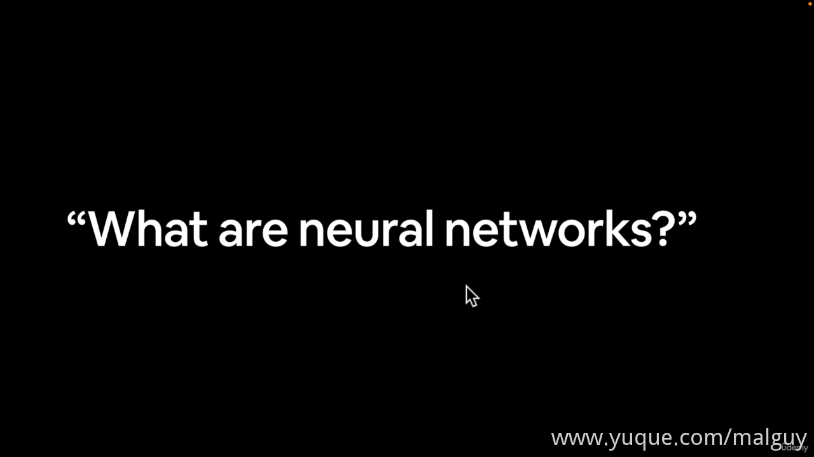
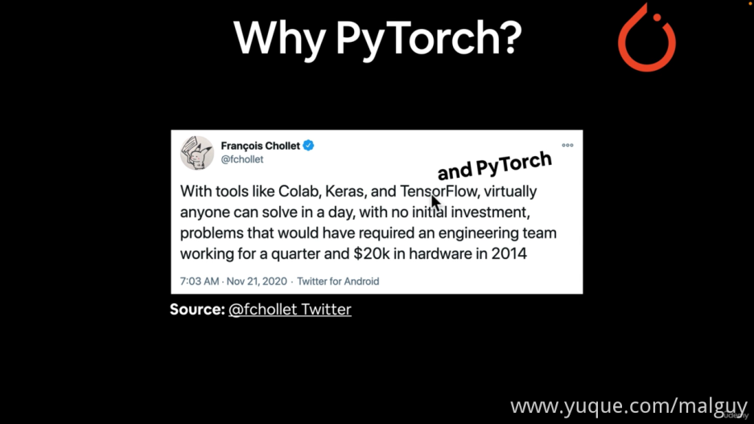
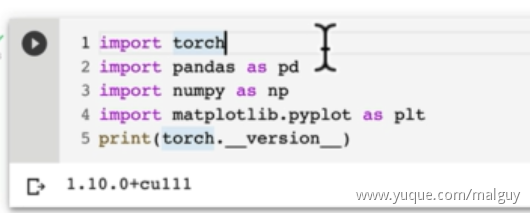
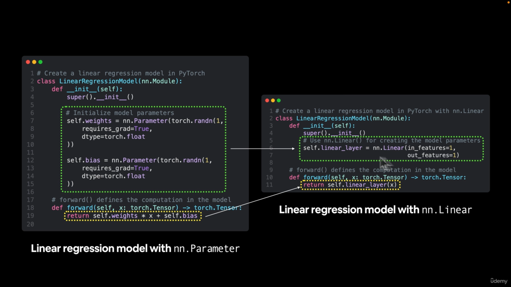

1_introduction
传统编程是输入+规则得到结果；机器学习是输入+预期结果推导出规则
2_pytorch_fundamentals
why use
机器学习不是银弹,不要不分场合地全用上
The Number 1 Rule of Machine Learning and What Is Deep Learning Good For–[koudaizy.com]
3. Machine Learning vs. Deep Learning–[koudaizy.com]
ML适合结构化数据, DL适合非结构化数据
4. Anatomy of Neural Networks–[koudaizy.com]

5. Different Types of Learning Paradigms–[koudaizy.com]
6. What Can Deep Learning Be Used For–[koudaizy.com]
7. What Is and Why PyTorch–[koudaizy.com]

8. What Are Tensors–[koudaizy.com]
9. What We Are Going To Cover With PyTorch–[koudaizy.com]
10. How To and How Not To Approach This Course–[koudaizy.com]
11. Important Resources For This Course–[koudaizy.com]
12. Getting Setup to Write PyTorch Code.en–[koudaizy.com]
选择gpu


13. Introduction to PyTorch Tensors–[koudaizy.com]
# -*- coding: utf-8 -*-
"""pytorch2023_1.ipynb
Automatically generated by Colaboratory.
Original file is located at
https://colab.research.google.com/drive/1Cwp9BwtatoEfJCFO6qKd-fXevd3ua52b
"""
## 00. pytorch fundamentals
print("hello i'm excited to learn pytorch!")
!nvidia-smi
import torch
import pandas as pd
import numpy as np
import matplotlib.pyplot as plt
# 2.0.0+cu118
print(torch.__version__)
# scalar
scalar = torch.tensor(7)
scalar # tensor(7)
# Returns the number of dimensions of self tensor.
# 返回张量的维度,同: Tensor.dim() → int (cpu)
scalar.ndim # gpu # 0
# 返回张量的元素个数
scalar.item() # 7
# vector
vector = torch.tensor([7,7])
vector # tensor([7, 7])
vector.ndim # 1 -> 维度和方括号的个数一样
vector.shape # torch.Size([2]) -> 方括号内元素的个数
# matrix
MATRIX = torch.tensor([[7,8],[9,10]])
MATRIX # tensor([[ 7, 8],
# [ 9, 10]])
MATRIX.ndim # 2
MATRIX[0] # tensor([7, 8])
MATRIX.shape # torch.Size([2, 2])
# tensor
TENSOR = torch.tensor([[[1,2,3],[3,6,9],[2,4,5]]])
TENSOR
TENSOR.ndim # 3
TENSOR.shape # torch.Size([1, 3, 3])
14. Creating Random Tensors in PyTorch–[koudaizy.com]
# -*- coding: utf-8 -*-
"""pytorch2023_1.ipynb
Automatically generated by Colaboratory.
Original file is located at
https://colab.research.google.com/drive/1Cwp9BwtatoEfJCFO6qKd-fXevd3ua52b
"""
## Random tensors
random_tensor = torch.rand(3,4)
random_tensor
random_tensor.ndim
# create a random tensor with similar shape to an image tensor
random_image_size_tensor = torch.rand(size=(3,224,224)) # 224*224*3 224(H)*224(W)是图片像素，3是RGB三色
random_image_size_tensor.shape,random_image_size_tensor.ndim
15. Creating Tensors With Zeros and Ones in PyTorch–[koudaizy.com]
### zero and ones
# create a tensor of all zeros
zeros = torch.zeros(size=(3,4))
zeros
# create a tensor of all ones
ones = torch.ones(size=(3,4))
ones
ones.dtype # torch.float32 -> 向量里的数据的类型
16. Creating a Tensor Range and Tensors Like Other Tensors–[koudaizy.com]
# creating a range of tensors and tensors-like
# use torch.range() 将在未来版本废弃
torch.range(0,10)
# use torch.range() 将在未来版本废弃
torch.range(0,10)
# start end step -> 从start开始，每次加77，直到超过end的前一个数
torch.arange(start=1,end=1000,step=77)
# creating tensors like
ten_zeros = torch.zeros_like(input=one_to_ten)
ten_zeros
17. Dealing With Tensor Data Types–[koudaizy.com]
# tensor datatypes
# float 32 tensor
float_32_tensor = torch.tensor([3.0,6.0,9.0],dtype=None)
float_16_tensor = torch.tensor([3.0,6.0,9.0],dtype=torch.float16)
print(float_32_tensor)
print(float_32_tensor.dtype)
print(float_16_tensor)
print(float_16_tensor.dtype)
test_tensor = torch.tensor([3.0,6.0,9.0],
dtype=None,
device=None,
requires_grad=False)
# requires_grad: 只要某一个输入需要相关梯度值，则输出也需要保存相关梯度信息，这样就保证了这个输入的梯度回传。
# 而反之，若所有的输入都不需要保存梯度，那么输出的requires_grad会自动设置为False。
# 既然没有了相关的梯度值，自然进行反向传播时会将这部分子图从计算中剔除。
test_tensor
float_16_tensor=float_32_tensor.type(torch.float16)
float_16_tensor
float_16_tensor * float_32_tensor
# int_32_tensor = torch.tensor([3,6,9],dtype=torch.int32)
int_32_tensor = torch.tensor([3,6,9],dtype=torch.long)
int_32_tensor
float_32_tensor * int_32_tensor
18. Getting Tensor Attributes–[koudaizy.com]

### getting information from tensors
# create a tensor
test_tensor = torch.rand(3,4)
print(test_tensor)
print(test_tensor.size())
print(test_tensor.dtype,test_tensor.size)
# find out details about tensor
print(test_tensor)
print(f'Datatype of tensor: {test_tensor.dtype}')
print(f'Shape of tensor: {test_tensor.size}')
print(f'Device tensor is on: {test_tensor.device}')
19. Manipulating Tensors (Tensor Operations)–[koudaizy.com]

# manipulating tensors
tensor = torch.tensor([1,2,3])
tensor + 10
# multiply tensor by 10
tensor * 10
# substract
tensor - 10
# try out pytorch in-build functions
torch.mul(tensor,10)
torch.add(tensor,10)
20-22. Matrix Multiplication–[koudaizy.com]
# Matrix multiplication
# elment wise multiplication
print(tensor,"*",tensor)
print(f"equals: {tensor*tensor}")
# matrix multiplication
# 14 = 1*1 + 2*2 + 3*3
torch.matmul(tensor,tensor)
%%time
value = 0
for i in range(len(tensor)):
value += tensor[i] * tensor[i]
print(value)
%%time
torch.matmul(tensor,tensor)
%%time
tensor @ tensor
# one of the most common errors in deep learning: shape errors
# shapes for matrix multiplication
tensor_a = torch.tensor([[1,2],[3,4],[5,6]])
tensor_b = torch.tensor([[7,10],[8,11],[9,12]])
# torch.mm(tensor_a,tensor_b) # mm = matmul -> error
print(tensor_b.T) # 转置
torch.mm(tensor_a,tensor_b.T)
23. Finding the Min Max Mean and Sum of Tensors (Tensor Aggregation)–[koudaizy.com]
# finding the min,max,mean,sum,etc...(tensor aggregation)
# create a tensor
x = torch.arange(0,100,10)
x,x.dtype
# find the min
torch.min(x), x.min()
# find the max
torch.max(x), x.max()
# find the mean(need a tensor of float32 datatype to work)
torch.mean(x.type(torch.float32)), x.type(torch.float32).mean()
# find the sum
torch.sum(x), x.sum()
24. Finding The Positional Min and Max of Tensors–[koudaizy.com]
## Finding the positional min and max
# find the position in tensor that has the minimum value
x.argmin() # 找到最小值所在的下标
x[x.argmin()]
# find the position in tensor that has the maximum value\
x[x.argmax()]
25. Reshaping, Viewing and Stacking Tensors–[koudaizy.com]
## Reshaping, stacking, squeezing and unsqueezing tensors
x = torch.arange(1.,10.)
x, x.shape
# add an extra dimension 添加额外维度
# x_reshaped = x.reshape(1,7)
# x_reshaped = x.reshape(2,10)
# x = torch.arange(1.,11.)
# x_reshaped = x.reshape(2,5) # 2*5=1*10
x_reshaped = x.reshape(1,9)
# x_reshaped = x.reshape(9,1)
x_reshaped,x_reshaped.shape
# change the view 创建view
z = x.view(1,9)
z,z.shape
# changing z changes x (because a view of a tensor shares the same memory as the original input)
z[:,0] = 5
z,x
# stack tensors on top of each other
# x_stacked = torch.stack([x,x,x,x],dim=0) # 横向
x_stacked = torch.stack([x,x,x,x],dim=1) # 纵向
x_stacked
26. Squeezing, Unsqueezing and Permuting Tensors–[koudaizy.com]
# torch.squeeze() - removes all signle dimensions from a target tensor
print(f'Previous tensor: {x_reshaped}')
print(f'Previous shape: {x_reshaped.shape}')
# remove extra dimensions from x_reshaped
x_squeezed = x_reshaped.squeeze()
print(f'\nNew tensor: {x_squeezed}')
print(f'New shape: {x_squeezed.shape}')
# torch.unsqueeze() - adds a single dimension to a target tensor at a specific dim
print(f'Previous target: {x_squeezed}')
print(f'Previous shape: {x_squeezed.shape}')
# add an extra dimension with unsqueeze
# x_unsqueezed = x_squeezed.unsqueeze(dim=0)
x_unsqueezed = x_squeezed.unsqueeze(dim=1)
print(f'\nNew tensor: {x_unsqueezed}')
print(f'\nNew shape: {x_unsqueezed.shape}')
# torch.permute - rearranges the dimensions of a target tensor in a specified order
x_original = torch.rand(size=(224,224,3)) # [height,width,color_channels]
# permute the original tensor to rearrange the axis(or dim) order
# 把源tensor的第n位移到新tensor的第n位
# 源2->新0(3)
x_permuted = x_original.permute(2,0,1) # shifts axios 0->1,1->2,2->0
print(f'Previous shape: {x_original.shape}')
print(f'New shape: {x_permuted.shape}') # [color_channels,height,width]
# permute返回的是view
x_original[0,0,0] = 132734
x_original[0,0,0],x_permuted[0,0,0]
27. Selecting Data From Tensors (Indexing)–[koudaizy.com]
# indexing(selecting data from tensors)
## indexing with pytorch is similar to indexing with numpy
x = torch.arange(1,10).reshape(1,3,3)
x, x.shape
x[0]
x[0][0],x[0,0],x[0][0][0]
# : 表示所有
x[:,0]
x[:,:,1]
x[:,1,1]
x[0,0,:]
28. PyTorch Tensors and NumPy–[koudaizy.com]
## pytorch tensors & numpy
array = np.arange(1.0,8.0)
tensor = torch.from_numpy(array)
array,tensor
print(tensor.dtype)
tensor.type(torch.float32)
array.dtype, torch.arange(1.0,8.0).dtype
array = array+1
array, tensor # array改变,不会导致tensor改变
# tensor to numpy
tensor = torch.ones(7)
numpy_tensor = tensor.numpy()
tensor,numpy_tensor
tensor = tensor+1
tensor,numpy_tensor # 同样不会改变
29. PyTorch Reproducibility (Taking the Random Out of Random)–[koudaizy.com]
import torch
import pandas as pd
import numpy as np
import matplotlib.pyplot as plt
## reproducbility
# torch.rand(3,3)
random_tensor_a = torch.rand(3,4)
random_tensor_b = torch.rand(3,4)
print(random_tensor_a,random_tensor_b,random_tensor_a==random_tensor_b)
# 可重现的随机
RANDOM_SEED=42 # 随机种子
torch.manual_seed(RANDOM_SEED)
random_tensor_c = torch.rand(3,4)
torch.manual_seed(RANDOM_SEED)
random_tensor_d = torch.rand(3,4)
print(random_tensor_c,random_tensor_d,random_tensor_c==random_tensor_d)
30. Different Ways of Accessing a GPU in PyTorch–[koudaizy.com]
print(torch.cuda.is_available())
device = 'cuda' if torch.cuda.is_available() else 'cpu'
print(device)
print(torch.cuda.device_count())
32. PyTorch Fundamentals Exercises and Extra-Curriculum–[koudaizy.com]
3_PyTorch Workflow
1. Introduction and Where You Can Get Help–[koudaizy.com]
2. Getting Setup and What We Are Covering–[koudaizy.com]

import torch
from torch import nn # 包含所有pytorch的神经网络构建块
import matplotlib.pyplot as plt
print(torch.__version__) # 2.0.0+cpu(视频里是1.10.0)
3. Creating a Simple Dataset Using the Linear Regression Formula–[koudaizy.com]
## 线性回归: y=wx+b
weight = 0.7
bias = 0.3
start = 0
end = 1
step = 0.02
x = torch.arange(start, end,step).unsqueeze(dim=1)
y = weight * x + bias
print(x[:10],y[:10],len(x),len(y))
4. Splitting Our Data Into Training and Test Sets–[koudaizy.com]
# 划分数据集
train_split = int(0.8*len(x))
# print(train_split)
x_train,y_train = x[:train_split],y[:train_split]
x_test,y_test = x[train_split:],y[train_split:]
5. Building a function to Visualize Our Data–[koudaizy.com]
# 可视化
def plot_predictions(train_data=x_train,
train_labels=y_train,
test_data=x_test,
test_labels=y_test,
predictions=None):
"""
plots training data,test data and compares predictions
"""
plt.figure(figsize=(10,7))
plt.scatter(train_data,train_labels,c='b',s=4,label='training data')
plt.scatter(test_data,test_labels,c='g',s=4,label='testing data')
if predictions is not None:
# 用户输入的预测->predictions
plt.scatter(test_data,predictions,c='r',s=4,label='predictions')
plt.legend(prop={"size":14})
plot_predictions()
plt.show()
6. Creating Our First PyTorch Model for Linear Regression–[koudaizy.com]
# build a model -> y = wx+b
# 继承nn.Module(里面有pytorch大部分的模块)
class LinearRegressionModel(nn.Module):
def __init__(self):
super().__init__()
# 模型参数 w
self.weights=nn.Parameter(torch.randn(1,
requires_grad=True,
dtype=torch.float))
# 偏置 b
self.bias=nn.Parameter(torch.randn(1,
requires_grad=True,
dtype=torch.float ))
# forward method to define the computation in the model
def forward(self,x:torch.Tensor)->torch.Tensor:
return self.weights * x + self.bias
7. Breaking Down What’s Happening in Our PyTorch Linear regression Model–[koudaizy.com]
继承了nn.Module需要重写forward方法
8. Discussing Some of the Most Important PyTorch Model Building Classes–[koudaizy.com]
9. Checking Out the Internals of Our PyTorch Model–[koudaizy.com]
# build a model -> y = wx+b
# 继承nn.Module(里面有pytorch大部分的模块)
class LinearRegressionModel(nn.Module):
def __init__(self):
super().__init__()
# 模型参数 w
self.weights=nn.Parameter(torch.randn(1,
requires_grad=True,
dtype=torch.float))
# 偏置 b
self.bias=nn.Parameter(torch.randn(1,
requires_grad=True,
dtype=torch.float))
# forward method to define the computation in the model
def forward(self,x:torch.Tensor)->torch.Tensor:
return self.weights * x + self.bias
# random seed
# 随机种子可以让随机生成的数可以复现(随机结果一致)
torch.manual_seed(42)
model_0 = LinearRegressionModel()
# [Parameter containing:
# tensor([0.3367], requires_grad=True), Parameter containing:
# tensor([0.1288], requires_grad=True)]
print(list(model_0.parameters()))
# OrderedDict([('weights', tensor([0.3367])), ('bias', tensor([0.1288]))])
print(model_0.state_dict())
10. Making Predictions With Our Random Model Using Inference Mode–[koudaizy.com]
出现这个error时看一看自己的代码缩进是不是正确
import torch
from torch import nn # 包含所有pytorch的神经网络构建块
import matplotlib.pyplot as plt
print(torch.__version__) # 2.0.0+cpu(视频里是1.10.0)
## 线性回归: y=wx+b
weight = 0.7
bias = 0.3
start = 0
end = 1
step = 0.02
x = torch.arange(start, end,step).unsqueeze(dim=1)
y = weight * x + bias
print(x[:10],y[:10],len(x),len(y))
# 划分数据集
train_split = int(0.8*len(x))
# print(train_split)
x_train,y_train = x[:train_split],y[:train_split]
x_test,y_test = x[train_split:],y[train_split:]
# 可视化
def plot_predictions(train_data=x_train,
train_labels=y_train,
test_data=x_test,
test_labels=y_test,
predictions=None):
"""
plots training data,test data and compares predictions
"""
plt.figure(figsize=(10,7))
plt.scatter(train_data,train_labels,c='b',s=4,label='training data')
plt.scatter(test_data,test_labels,c='g',s=4,label='testing data')
if predictions is not None:
# 用户输入的预测->predictions
plt.scatter(test_data,predictions,c='r',s=4,label='predictions')
plt.legend(prop={"size":14})
# build a model -> y = wx+b
# 继承nn.Module(里面有pytorch大部分的模块)
class LinearRegressionModel(nn.Module):
def __init__(self):
super().__init__()
# 模型参数 w
self.weights=nn.Parameter(torch.randn(1,
requires_grad=True,
dtype=torch.float))
# 偏置 b
self.bias=nn.Parameter(torch.randn(1,
requires_grad=True,
dtype=torch.float))
# forward method to define the computation in the model
def forward(self,x:torch.Tensor)->torch.Tensor:
return self.weights * x + self.bias
# random seed
# 随机种子可以让随机生成的数可以复现(随机结果一致)
torch.manual_seed(42)
model_0 = LinearRegressionModel()
# [Parameter containing:
# tensor([0.3367], requires_grad=True), Parameter containing:
# tensor([0.1288], requires_grad=True)]
print(list(model_0.parameters()))
# OrderedDict([('weights', tensor([0.3367])), ('bias', tensor([0.1288]))])
print(model_0.state_dict())
# try to predict
# inference_mode -> 推理模式 没有上下文,没有梯度,单纯使用模型预测
with torch.inference_mode():
y_preds = model_0(x_test)
# no_grad和推理模式类似, 但是推荐用推理模式
# with torch.no_grad():
# y_preds = model_0(x_test)
print(y_preds)
plot_predictions(predictions=y_preds)
plt.show()
11. Training a Model Intuition (The Things We Need)–[koudaizy.com]
12. Setting Up an Optimizer and a Loss Function–[koudaizy.com]
# loss function -> 衡量模型好坏
loss_fn = nn.L1Loss()
# optimizer -> 优化器
# stochastic gradient descent
optimizer = torch.optim.SGD(params=model_0.parameters(),
lr=0.01)
13. PyTorch Training Loop Steps and Intuition–[koudaizy.com]
epochs = 1
for epoch in range(epochs):
# set the model to training mode
model_0.train()
model_0.eval() # turns off gradient tracking
14. Writing Code for a PyTorch Training Loop–[koudaizy.com]
epochs = 1
for epoch in range(epochs):
# set the model to training mode
model_0.train()
# 1.forward pass
y_pred=model_0(x_train)
# 2.calculate loss
loss = loss_fn(y_pred,y_train)
# 3.optimizer zero grad
optimizer.zero_grad()
# 4.perform backpropagation on the loss with respect to the parameters of the model
loss.backward()
# 5.step the optimizer (perform gradient descent)
optimizer.step() # 梯度改变
# model_0.eval() # turns off gradient tracking
15. Reviewing the Steps in a Training Loop Step by Step–[koudaizy.com]
# build a model -> y = wx+b
# 继承nn.Module(里面有pytorch大部分的模块)
class LinearRegressionModel(nn.Module):
def __init__(self):
super().__init__()
# 模型参数 w
self.weights=nn.Parameter(torch.randn(1,
requires_grad=True,
dtype=torch.float))
# 偏置 b
self.bias=nn.Parameter(torch.randn(1,
requires_grad=True,
dtype=torch.float))
# forward method to define the computation in the model
def forward(self,x:torch.Tensor)->torch.Tensor:
return self.weights * x + self.bias
# train model
# loss function -> 衡量模型好坏
loss_fn = nn.L1Loss()
# optimizer -> 优化器
# stochastic gradient descent
optimizer = torch.optim.SGD(params=model_0.parameters(),
lr=0.01)
# 训练
epochs = 5
for epoch in range(epochs):
# set the model to training mode
model_0.train()
# 1.forward pass
y_pred=model_0(x_train)
# 2.calculate loss
loss = loss_fn(y_pred,y_train)
print(f'Loss: {loss}')
# 3.optimizer zero grad
optimizer.zero_grad()
# 4.perform backpropagation on the loss with respect to the parameters of the model
loss.backward()
# 5.step the optimizer (perform gradient descent)
optimizer.step() # 梯度改变
model_0.eval() # turns off gradient tracking
print(model_0.state_dict())
with torch.inference_mode():
y_pred_new = model_0(x_test)
print(y_pred_new)
plot_predictions(predictions=y_preds)
plot_predictions(predictions=y_pred_new)
plt.show()

16. Running Our Training Loop Epoch by Epoch and Seeing What Happens–[koudaizy.com]
17. Writing Testing Loop Code and Discussing What’s Happening Step by Step–[koudaizy.com]
# 训练
epochs = 100
for epoch in range(epochs):
# set the model to training mode
model_0.train()
# 1.forward pass
y_pred=model_0(x_train)
# 2.calculate loss
loss = loss_fn(y_pred,y_train)
# print(f'Loss: {loss}')
# 3.optimizer zero grad
optimizer.zero_grad()
# 4.perform backpropagation on the loss with respect to the parameters of the model
loss.backward()
# 5.step the optimizer (perform gradient descent)
optimizer.step() # 梯度改变
# 评估模型前,关闭某些层的特殊模式(训练/评估时有不同的模式)
model_0.eval() # turns off gradient tracking
with torch.inference_mode():
# 老代码会有with no_grad,但是现在用推理模式比较好
# 1. do the forward pass
test_pred = model_0(x_test)
# 2. calculate the loss
test_loss = loss_fn(test_pred, y_test)
if epoch % 10 == 0:
print(f'epoch: {epoch} | test: {loss} | test loss: {test_loss}')
print(model_0.state_dict())
18. Reviewing What Happens in a Testing Loop Step by Step–[koudaizy.com]
# train model
# loss function -> 衡量模型好坏
loss_fn = nn.L1Loss()
# optimizer -> 优化器
# stochastic gradient descent
optimizer = torch.optim.SGD(params=model_0.parameters(),
lr=0.01)
# 训练
epochs = 100
# 用于记录每轮数据
epoch_count = []
loss_values = []
test_loss_values = []
for epoch in range(epochs):
# set the model to training mode
model_0.train()
# 1.forward pass
y_pred=model_0(x_train)
# 2.calculate loss
loss = loss_fn(y_pred,y_train)
# print(f'Loss: {loss}')
# 3.optimizer zero grad
optimizer.zero_grad()
# 4.perform backpropagation on the loss with respect to the parameters of the model
loss.backward()
# 5.step the optimizer (perform gradient descent)
optimizer.step() # 梯度改变
# 评估模型前,关闭某些层的特殊模式(训练/评估时有不同的模式)
model_0.eval() # turns off gradient tracking
with torch.inference_mode():
# 老代码会有with no_grad,但是现在用推理模式比较好
# 1. do the forward pass
test_pred = model_0(x_test)
# 2. calculate the loss
test_loss = loss_fn(test_pred, y_test)
if epoch % 10 == 0:
epoch_count.append(epoch)
loss_values.append(loss)
test_loss_values.append(test_loss)
print(f'epoch: {epoch} | test: {loss} | test loss: {test_loss}')
print(model_0.state_dict())
with torch.inference_mode():
y_pred_new = model_0(x_test)
print(y_pred_new)
# plot_predictions(predictions=y_preds)
# plot_predictions(predictions=y_pred_new)
plt.show()
print(f'epoch_count: {epoch_count}\nloss_values: {loss_values}\ntest_loss_values: {test_loss_values}')
plt.plot(epoch_count, np.array(torch.tensor(loss_values).cpu().numpy()),label="train loss")
plt.plot(epoch_count, test_loss_values,label="tset loss")
plt.title("Training and test loss curves")
plt.ylabel("Loss")
plt.xlabel("Epochs")
plt.legend()
plt.show()
19. Writing Code to Save a PyTorch Model–[koudaizy.com]

# saving a model in pytorch
# 1.create model directory
MODEL_PATH = Path("models")
MODEL_PATH.mkdir(parents=True,exist_ok=True)
# 2.create model save path
MODEL_NAME = "01_pytorch_workflow_model_0.pth" # 后缀可以是.pt或.pth
MODEL_SAVE_PATH = MODEL_PATH / MODEL_NAME
print(MODEL_SAVE_PATH)
# 3.save the model state dict
print(f'saving model to: {MODEL_SAVE_PATH}')
torch.save(obj=model_0.state_dict(),f=MODEL_SAVE_PATH)
20. Writing Code to Load a PyTorch Model–[koudaizy.com]
# saving a model in pytorch
# 1.create model directory
MODEL_PATH = Path("models")
MODEL_PATH.mkdir(parents=True,exist_ok=True)
# 2.create model save path
MODEL_NAME = "01_pytorch_workflow_model_0.pth" # 后缀可以是.pt或.pth
MODEL_SAVE_PATH = MODEL_PATH / MODEL_NAME
print(MODEL_SAVE_PATH)
# 3.save the model state dict
print(f'saving model to: {MODEL_SAVE_PATH}')
torch.save(obj=model_0.state_dict(),f=MODEL_SAVE_PATH)
# loading a pytorch model
loaded_model_0 = LinearRegressionModel()
# 加载状态字典
loaded_model_0.load_state_dict(torch.load(f=MODEL_SAVE_PATH))
# make some prediction
loaded_model_0.eval()
with torch.inference_mode():
loaded_model_preds = loaded_model_0(x_test)
print(loaded_model_preds)
print(y_preds==loaded_model_preds)
print(y_preds)
model_0.eval()
with torch.inference_mode():
y_preds = model_0(x_test)
# 原模型和保存的模型预测结果一样
print(y_preds==loaded_model_preds)
21. Setting Up to Practice Everything We Have Done Using Device Agnostic code–[koudaizy.com]
import torch
from torch import nn # 包含所有pytorch的神经网络构建块
import matplotlib.pyplot as plt
import numpy as np
from pathlib import Path
# setup device agnostic data
device = 'cuda' if torch.cuda.is_available() else 'cpu'
print(f'using device: {device}')
22. Putting Everything Together (Part 1) Data–[koudaizy.com]
# data
weight = 0.7
bias = 0.3
# create range values
start = 0
end = 1
step = 0.02
# create x and y (features & labels)
X = torch.arange(start,end,step).unsqueeze(dim=1)
y = weight * X + bias
print(X[:10],y[:10])
# split data
train_split = int(0.8*len(X))
x_train,y_train=X[:train_split],y[:train_split]
x_test,y_test=X[train_split:],y[train_split:]
# 可视化
def plot_predictions(train_data=x_train,
train_labels=y_train,
test_data=x_test,
test_labels=y_test,
predictions=None):
"""
plots training data,test data and compares predictions
"""
# 创建自定义图像,figsize为宽高
plt.figure(figsize=(10,7))
# scatter散点图
plt.scatter(train_data,train_labels,c='b',s=4,label='training data')
plt.scatter(test_data,test_labels,c='g',s=4,label='testing data')
if predictions is not None:
# 用户输入的预测->predictions
plt.scatter(test_data,predictions,c='r',s=4,label='predictions')
plt.legend(prop={"size":14})
plot_predictions(x_train,y_train,x_test,y_test)
plt.show()
23. Putting Everything Together (Part 2) Building a Model–[koudaizy.com]

# create a linear model by subclassing nn.Module
class LinearRegressionModelV2(nn.Module):
def __init__(self) -> None:
super().__init__()
# use nn.Linear() for creating the model parameters
# alse call: linear transform,probing layer(探测层),fully connected layer(全连接层),dense layer(密集层)
# feature -> 输入输出的形状(shape)
self.linear_layer = nn.Linear(in_features=1,
out_features=1)
def forward(self,x: torch.Tensor) -> torch.Tensor:
return self.linear_layer(x)
# set the manual seed
torch.manual_seed(42)
model_1 = LinearRegressionModelV2()
print(model_1)
print(model_1.state_dict())
24. Putting Everything Together (Part 3) Training a Model–[koudaizy.com]
# make the data to the same device with model
x_train = x_train.to(device)
y_train = y_train.to(device)
x_test = x_test.to(device)
y_test = y_test.to(device)
# 3
print(model_1.state_dict())
# loss function
loss_fn = nn.L1Loss() # same as MAE
# optimizer
optimizer = torch.optim.SGD(params=model_1.parameters(),lr=0.01)
# train loop
torch.manual_seed(42)
epochs = 200
for epoch in range(epochs):
model_1.train()
# 1,forward pass
y_prad = model_1(x_train)
# 2,calculate the loss
loss = loss_fn(y_prad,y_train)
# 3,optimizer zero grad
optimizer.zero_grad()
# 4,perform backpropagation
loss.backward()
# 5,optimizer step
optimizer.step()
## testing
model_1.eval()
with torch.inference_mode():
test_pred = model_1(x_test)
test_loss = loss_fn(test_pred,y_test)
# print what happen
if epoch % 10 == 0:
print(f'epoch: {epoch} | loss: {loss} | test loss: {test_loss}')
print(model_1.state_dict())
25. Putting Everything Together (Part 4) Making Predictions With a Trained Model–[koudaizy.com]
# 4
# making and evaluating predictions
# turn model into evaluation mode
model_1.eval()
with torch.inference_mode():
y_preds = model_1(x_test)
print(y_preds)
# check out our model predictions visually
# 因为matplotlib是基于numpy/cpu的所以要把数据(如果是在gpu上计算的)切换
plot_predictions(predictions=y_preds.cpu())
plt.show()
26. Putting Everything Together (Part 5) Saving and Loading a Trained Model–[koudaizy.com]
# 5
# saving and loading a trained model
# 1,create models directory
MODEL_PATH = Path("models")
MODEL_PATH.mkdir(parents=True,exist_ok=True)
# 2,create model save path
MODEL_NAME = "01_pytorch_workflow_model_1.pth"
MODEL_SAVE_PATH = MODEL_PATH / MODEL_NAME
# 3,save the model state dict
print(f"saving model to: {MODEL_SAVE_PATH}")
torch.save(obj=model_1.state_dict(),f=MODEL_SAVE_PATH)
# load a pytroch
# create a new instance of linear regression model v2
loaded_model_1 = LinearRegressionModelV2()
# load the saved model_1 state_dict
loaded_model_1.load_state_dict(torch.load(MODEL_SAVE_PATH))
# put the loaded model to device
loaded_model_1.to(device)
print(next(loaded_model_1.parameters()).device)
# evaluate loaded model
loaded_model_1.eval()
with torch.inference_mode():
loaded_model_1_preds = loaded_model_1(x_test)
print(y_preds==loaded_model_1_preds)
4_PyTorch Neural Network Classification
1. Introduction to Machine Learning Classification With PyTorch–[koudaizy.com]
多标签是一个物体多个分类,多分类是一个物体一个分类">
2. Classification Problem Example Input and Output Shapes–[koudaizy.com]
batch_size不超过32会比较好
3. Typical Architecture of a Classification Neural Network (Overview)–[koudaizy.com]
4. Making a Toy Classification Dataset–[koudaizy.com]
# 1 make classification data and get it ready
import sklearn
from sklearn.datasets import make_circles
import pandas as pd
import matplotlib.pyplot as plt
# make 1000 samples
n_samples = 1000
# create circles
# random_state 随机种子
x,y = make_circles(n_samples,noise=0.03,random_state=42)
print(f'first 5 samples of x:\n {x[:5]}')
print(f'first 5 samples of y:\n {y[:5]}')
# make dataframe of circle data
circles = pd.DataFrame({'x1':x[:,0],
'x2':x[:,1],
'label':y})
print(circles.head(10))
plt.scatter(x=x[:,0],y=x[:,1],c=y,cmap=plt.cm.RdYlBu)
plt.show()
5. Turning Our Data into Tensors and Making a Training and Test Split–[koudaizy.com]
## 1.1 check input and output shapes
print(x.shape,y.shape)
x_sample = x[0]
y_sample = y[0]
print(f'values for one sample of x: {x_sample} and the same for y: {y_sample}')
print(f'shapes for one sample of x: {x_sample.shape} and the same for y: {y_sample.shape}')
## 1.2 turn data into tensors and create train and test splits
x = torch.from_numpy(x).type(torch.float)
y = torch.from_numpy(y).type(torch.float)
print(x[:5],y[:5])
# split data
x_train,x_test,y_train,y_test = train_test_split(x,y,test_size=0.2,random_state=42)
6. Laying Out Steps for Modelling and Setting Up Device-Agnostic Code–[koudaizy.com]
import torch
from torch import nn
# 2 building a model
# make device agnostic code
device = "cuda" if torch.cuda.is_available() else "cpu"
print(device)
7. Coding a Small Neural Network to Handle Our Classification Data–[koudaizy.com]
class CircleModelV0(nn.Module):
def __init__(self) -> None:
super().__init__()
# create 2 nn.Linear layers capable of handling the shapes of our data
self.layer_1 = \
nn.Linear(in_features=2,out_features=5) # 输入2个特征,升级为5个特征(5这个数可以随机取的)
# 下一层的输入要和上一层的输出规格一致
self.layer_2 = nn.Linear(in_features=5,out_features=1)
def forward(self,x):
return self.layer_2(self.layer_1(x)) # x -> layer1 -> layer2
model_0 = CircleModelV0().to(device)
print(model_0)
8. Making Our Neural Network Visual–[koudaizy.com]
9. Recreating and Exploring the Insides of Our Model Using nn.Sequential–[koudaizy.com]
# let's replicate the model above using nn.Sequential()
model_0 = nn.Sequential(
nn.Linear(in_features=2,out_features=5),
nn.Linear(in_features=5,out_features=1),
).to(device)
print(model_0)
# make predictions
with torch.inference_mode():
untrained_preds = model_0(x_test.to(device))
print(f'length of predictions: {len(untrained_preds)}, shape: {untrained_preds.shape}')
print(f'length of test sample: {len(x_test)}, shape: {x_test.shape}')
print(f'\nfirst 10 predictions:\n{torch.round(untrained_preds[:10])}')
print(f'\nfirst 10 labels:\n{y_test[:10]}')
10. Loss Function Optimizer and Evaluation Function for Our Classification Network–[koudaizy.com]
# 2.1 setup loss function and optimizer
loss_fn = nn.BCEWithLogitsLoss() # sigmoid activation function
optimizer = torch.optim.SGD(params=model_0.parameters(),
lr=0.1)
# calculate accuracy - out of 100 examples, what percentage does our model get right?
def accuracy_fn(y_true,y_pred):
correct = torch.eq(y_true,y_pred).sum().item()
acc = (correct/len(y_pred)) * 100
return acc
11. Going from Model Logits to Prediction Probabilities to Prediction Labels–[koudaizy.com]
# 3. train model
model_0.eval()
with torch.inference_mode():
y_logits = model_0(x_test.to(device))[:5]
print(y_logits)
print(model_0.state_dict())
y_pred_probs = torch.sigmoid(y_logits)
print(y_pred_probs)
print(torch.round(y_pred_probs)) # 四舍五入
# find the predicted labels
y_preds = torch.round(y_pred_probs)
# in full(logits->pred probs->pred labels)
y_pred_probs = torch.round(torch.sigmoid(model_0(x_test.to(device))[:5]))
# check for equality
print(torch.eq(y_preds.squeeze(),y_pred_probs.squeeze()))
# get rid of extra dimension
print(y_preds.squeeze())
12. Coding a Training and Testing Optimization Loop for Our Classification Model–[koudaizy.com]
# 3.2 building a training and testing loop
torch.manual_seed(42)
torch.cuda.manual_seed(42)
# set the number of epochs
epochs = 100
# put data to target device
x_train,y_train = x_train.to(device),y_train.to(device)
x_test,y_test = x_test.to(device),y_test.to(device)
# build training and evaluation loop
for epoch in range(epochs):
### training
model_0.train()
# 1. forward pass
y_logits = model_0(x_train).squeeze()
# turn logits -> pred probs -> pred labels
y_pred = torch.round(torch.sigmoid(y_logits))
# 2. calculate loss/accuracy
loss = loss_fn(y_logits,
y_train)
acc = accuracy_fn(y_true=y_train,
y_pred=y_pred)
# 3. optimizer zero grad
optimizer.zero_grad()
# 4. loss backward (backpropagation)
loss.backward()
# 5. optimizer step (gradient descent)
optimizer.step()
### testing
model_0.eval()
with torch.inference_mode():
# 1. forward pass
test_logits = model_0(x_test).squeeze()
test_pred = torch.round(torch.sigmoid(test_logits))
# 2.calculate test loss/acc
test_loss = loss_fn(test_logits,y_test)
test_acc = accuracy_fn(y_true=y_test,y_pred=test_pred)
# print out what's happenin'
if epoch%10==0:
print(f'epoch: {epoch} | loss: {loss:.5f}, acc: {acc:.2f}% | test loss: {test_loss:.5f}, test acc: {test_acc:.2f}%')
13. Writing Code to Download a Helper Function to Visualize Our Models Predictions–[koudaizy.com]
# download helper functions
if Path("helper_functions.py").is_file():
print("helper_functions.py already exists")
else:
print("download helper_functions.py")
req = requests.get("https://raw.githubusercontent.com/mrdbourke/pytorch-deep-learning/main/helper_functions.py")
with open("helper_functions.py", "wb") as f:
f.write(req.content)
# plot decision boundary of the model
plt.figure(figsize=(12,6))
plt.subplot(1,2,1)
plt.title("Train")
plot_decision_boundary(model_0,x_train,y_train)
plt.subplot(1,2,2)
plt.title("Test")
plot_decision_boundary(model_0,x_test,y_test)
plt.show()

14. Discussing Options to Improve a Model–[koudaizy.com]
15. Creating a New Model with More Layers and Hidden Units–[koudaizy.com]
# improve model
class CircleModelV1(nn.Module):
def __init__(self):
super().__init__()
self.layer_1 = nn.Linear(in_features=2,out_features=10)
self.layer_2 = nn.Linear(in_features=10,out_features=10)
self.layer_3 = nn.Linear(in_features=10,out_features=1)
def forward(self,x):
z = self.layer_1(x)
z = self.layer_2(z)
z = self.layer_3(z)
return z
model_1 = CircleModelV1().to(device)
print(model_1)
16. Writing Training and Testing Code to See if Our Upgraded Model Performs Better–[koudaizy.com]
# create a loss function
loss_fn = nn.BCEWithLogitsLoss()
# create an optimizer
optimizer = torch.optim.SGD(params=model_1.parameters() ,
lr=0.001)
# write a training and evaluation loop for model_1
torch.manual_seed(42)
# torch.cuda.manual_seed(42)
epochs= 1000
# put data on the target device
x_train,y_train = x_train.to(device),y_train.to(device)
x_test,y_test = x_test.to(device),y_test.to(device)
for epoch in range(epochs):
### Training
model_1.train()
# 1.forward pass
y_logits = model_1(x_train).squeeze()
y_pred = torch.round(torch.sigmoid(y_logits))
# 2. calculate the loss/acc
loss = loss_fn(y_logits,y_train)
acc = accuracy_fn(y_true=y_train,
y_pred=y_pred)
# 3. optimize zero grad
optimizer.zero_grad()
# 4. loss backword (backpropagation)
loss.backward()
# 5. optimizer step (gradient descent)
optimizer.step()
### testing
model_1.eval()
with torch.inference_mode():
# 1. forward pass
test_logits = model_1(x_test).squeeze()
test_pred = torch.round(torch.sigmoid(test_logits))
# 2. calculate loss
test_loss = loss_fn(test_logits,
y_test)
test_acc = accuracy_fn(y_true=y_test,
y_pred=test_pred)
# pring what's happen
if epoch % 100 == 0:
print(f'epoch: {epoch} | loss: {loss:.5f}, acc: {acc:.2f}% | test loss: {test_loss:.5f}, test acc: {test_acc:.2f}%')
# plot decision boundary of the model
plt.figure(figsize=(12,6))
plt.subplot(1,2,1)
plt.title("Train")
plot_decision_boundary(model_1,x_train,y_train)
plt.subplot(1,2,2)
plt.title("Test")
plot_decision_boundary(model_1,x_test,y_test)
plt.show()
17. Creating a Straight Line Dataset to See if Our Model is Learning Anything–[koudaizy.com]
# 5.1 preparing data to see if our model can fit a straight line
# create some data
weight = 0.7
bias = 0.3
start = 0
end = 1
step = 0.01
x_regression = torch.arange(start,end,step).unsqueeze(dim=1)
y_regression = weight * x_regression + bias
# create train and test splits
train_split = int(0.8*len(x_regression))
x_train_regression,y_train_regression = x_regression[:train_split],y_regression[:train_split]
x_test_regression,y_test_regression = x_regression[train_split:],y_regression[train_split:]
plot_predictions(train_data=x_train_regression,
train_labels=y_train_regression,
test_data=x_test_regression,
test_labels=y_test_regression)
plt.show()
18. Building and Training a Model to Fit on Straight Line Data–[koudaizy.com]
# 5.2 adjusting model_1 to fit a straight line
model_2 = nn.Sequential(
nn.Linear(in_features=1,out_features=10),
nn.Linear(in_features=10,out_features=10),
nn.Linear(in_features=10,out_features=1)
).to(device)
# loss and optimizer
loss_fn = nn.L1Loss()
optimizer = torch.optim.SGD(params=model_2.parameters(),
lr=0.1)
# train
torch.manual_seed(42)
# torch.cuda.manual_seed(42)
# set the number of epochs
epochs = 1000
# put the data on the target device
x_train_regression,y_train_regression=x_train_regression.to(device),y_train_regression.to(device)
x_test_regression,y_test_regression=x_test_regression.to(device),y_test_regression.to(device)
# training
for epoch in range(epochs):
y_pred = model_2(x_train_regression)
loss = loss_fn(y_pred,y_train_regression)
optimizer.zero_grad()
loss.backward()
optimizer.step()
# testing
model_2.eval()
with torch.inference_mode():
test_pred = model_2(x_test_regression)
test_loss = loss_fn(test_pred,y_test_regression)
# print
if epoch % 100 == 0:
print(f'epoch: {epoch} | loss: {loss:.5f} | test loss: {test_loss:.5f}')
19. Evaluating Our Models Predictions on Straight Line Data–[koudaizy.com]
model_2.eval()
with torch.inference_mode():
y_preds = model_2(x_test_regression)
plot_predictions(train_data=x_train_regression.cpu(),
train_labels=y_train_regression.cpu(),
test_data=x_test_regression.cpu(),
test_labels=y_test_regression.cpu(),
predictions=y_preds.cpu())
plt.show()